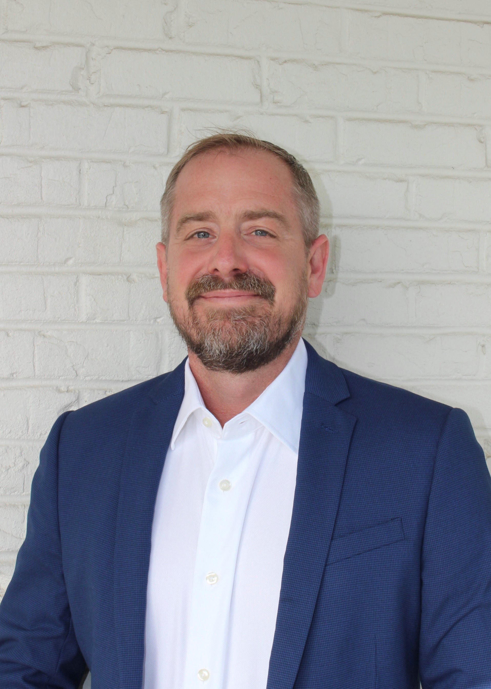

Damon Steffens
Chief Executive Officer, Canopy Management Consulting Group
As CFO of a large Florida state agency, Steffens was responsible for the full spectrum of state and federal financial management — appropriations, budget hearings, procurement, grants compliance, and financial monitoring across a large, federally funded agency portfolio. He has defended agency budgets before legislative committees and managed the financial architecture of programs that directly impacted Florida businesses and workforce programs.
He co-founded Canopy in 2020 with the conviction that public sector organizations deserve consulting partners who have held the same accountabilities they hold — not just studied them.